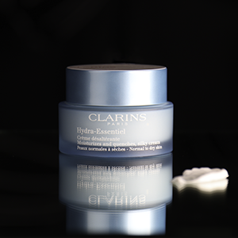
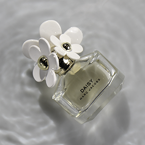

Portrætbilleder
Her ses en række portrætbilleder jeg har taget af venner. Her er der justeret på belysningen og derefter redigeret i Adobe Lightroom samt Adobe Lightroom Classic.
Animation
Her ses en animation jeg har lavet ved brug af Adobe Illustrator, samt kodning i både HTML og CSS. Her skifter animationen blandt 5 sprites for at få effekten af at Pikachu vinker.



Produktbilleder
Her har jeg fotograferet 3 forskellige produkter. Det første billede er fotograferet med en mørk baggrund og hvor produktet står placeret ovenpå et spejl for at opnå genskin. På det andet billede er der fotograferet en parfume der ligger i en gasbeholder fyldt med vand. Her er der brugt en hårtørrer til at skabe bølger i vandet. Med effekten af hår belysning har det dermed skabt dette resultat. Det sidste billede er fotograferet på samme måde som det første billede. Herefter er alle billeder blevet redigeret inde i enten Adobe Lightroom, Adobe Lightroom Classic eller Adobe Photoshop.
Animation
Her ses endnu en animation jeg har lavet ved brug af Adobe Illustrator, samt kodning i både HTML og CSS. Selve denne illustration er benyttet som logo på hjemmesiden, men er senere blevet udviklet til en animation med henblik på at vise at den ikke er tegnet i frihånd, men i stedet er der blevet benyttet et baggrundsbillede til at skitsere efter. Her er der 20 sprites.
Fotografering
Her ses en længere række billeder jeg har fotograferet indenfor det sidste halve år. Nogle i forbindelse med undervisning på mit studie og andre i det private. Disse billeder er alle rå og ikke redigeret.
Animation
Denne animation er den første jeg har produceret. Denne er udelukkende lavet ved brug af Adobe Photoshop og Adobe Animate og dermed har jeg her ikke produceret noget bagvedlæggende kode.